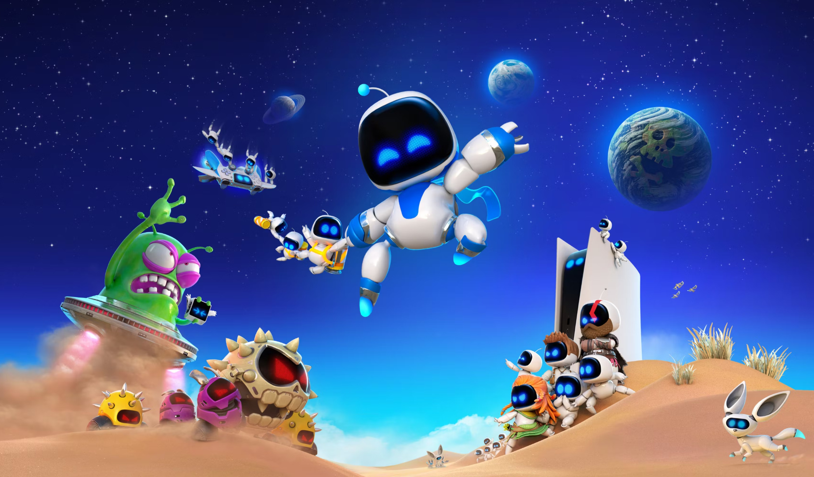
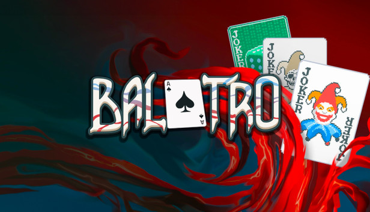
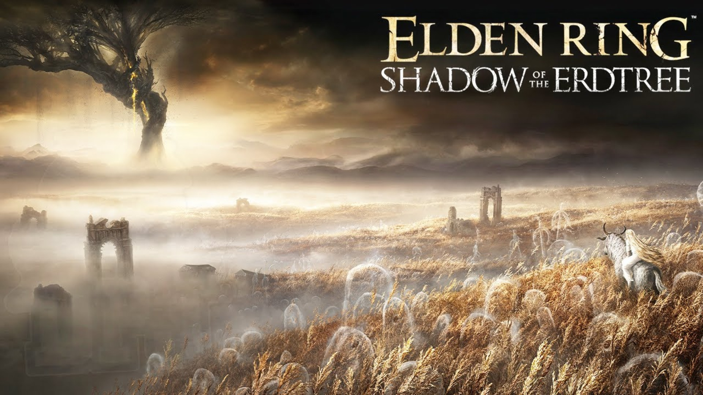

Hello! I'm Muhammad Zikri, a passionate gamer and developer. I love exploring new games and sharing my experiences with others. Welcome to my website where I showcase some of the most popular games of 2024. Stay tuned for more updates and reviews!

Astro Bot menjadi game eksklusif PlayStation kedua yang memberikan pilihan bahasa Indonesia setelah Marvel's Spider-Man 2 pada 2023. Kisahnya mirip Astro Bot Rescue Mission. Astro harus menyelamatkan teman-temannya yang ditawan monster. Unsur kebaruannya ada di power up.

Membuat ketagihan dan luar biasa memuaskan, Balatro adalah campuran apik beberapa permainan kartu seperti Solitaire dan Poker, yang membolehkanmu melanggar aturan dengan cara yang tidak seperti biasanya! Tujuanmu adalah mengalahkan Boss Blind dengan membuat poker hand yang kuat.

Shadow of the Erdtree adalah ekspansi DLC pertama dan satu-satunya untuk Elden Ring yang inovatif dari FromSoftware. Ekspansi ini membawa pemain ke wilayah yang sama sekali baru, Land of Shadow, tempat cerita baru menanti Tarnished .